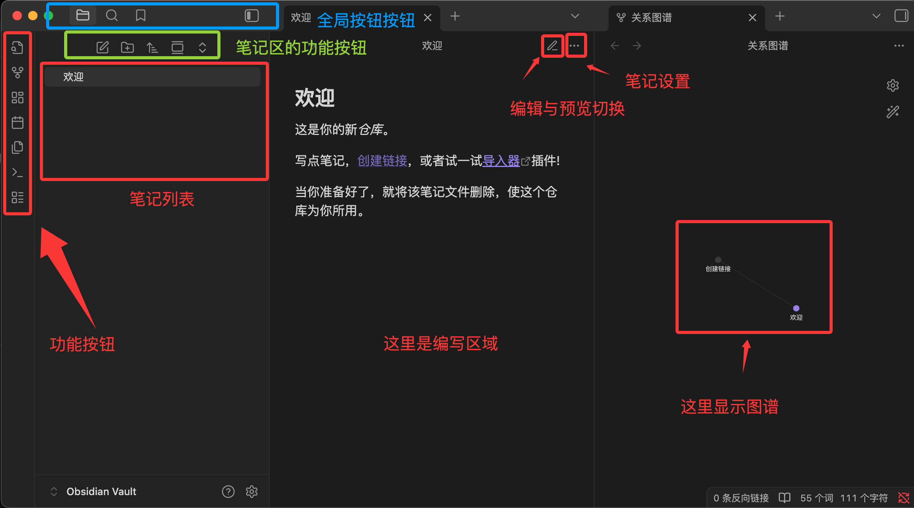

目录
- 1 概述
- 2 Markdown编辑器
- 3 标题
- 4 文本格式
- 5 列表
- 6 引用
- 7 代码
- 8 链接
- 9 锚点
- 10 图片
- 11 表格
- 12 HTML元素
- 13 数学公式
- 14 图表绘制
- 15 Obsidian
1 概述
Markdown 是一种轻量级标记语言，允许使用易读易写的纯文本格式编写文档。
Markdown 编写的文档可以导出 HTML 、Word、图像、PDF、Epub 等多种格式的文档。
Markdown 编写的文档后缀为 .md, .markdown。
Markdown 并不是 HTML 的替代品，而是 HTML 的简化版本。实际上，Markdown 的最终目标就是转换为 HTML。
Markdown 源码 → 解析器 → HTML 输出 → 浏览器渲染
2 Markdown编辑器
- VS Code Markdown
-
专门的 Markdown 编辑器
- Mark Text：开源的实时预览 Markdown 编辑器，界面简洁，功能完整。下载地址：https://github.com/marktext/marktext/
- Zettlr：学术写作导向的 Markdown 编辑器，支持引用管理和论文写作功能。下载地址：https://github.com/Zettlr/Zettlr
- Joplin：免费开源的支持 markdown 的笔记应用 -- https://joplinapp.org/
-
在线编辑器
-
Markdown 在线编辑器：https://www.jyshare.com/front-end/712/
- Dillinger：https://dillinger.io/ 功能齐全的在线 Markdown 编辑器，支持云同步和多种导出格式。
- StackEdit：https://stackedit.io/ 基于浏览器的编辑器，与 Google Drive、Dropbox 等云服务集成。
- 简书、语雀编辑器：国内平台提供的在线 Markdown 编辑环境。
2.1 VS Code Markdown
VS Code 自带对 Markdown 的支持，支持语法高亮、预览、导出等功能。
实时预览需要执行 Markdown: Open Preview to the Side 命令来实现。
如果使用 VS Code 等编辑器，按 Ctrl+Shift+V 打开预览面板，也可以点击右上角的预览图标
如果你需要将 markdown 转为 PDF、图片、HTML 等格式也可以安装对应的插件来实现
3 标题
两种格式：= 和 -以及#
我展示的是一级标题
=================
我展示的是二级标题
-----------------
# 一级标题
## 二级标题
### 三级标题
#### 四级标题
##### 五级标题
###### 六级标题
行首位置：# 号必须在行首，前面不能有其他字符（空格或制表符）。
4 文本格式
换行是使用两个以上空格加上回车
当然也可以在段落后面使用一个空行来表示重新开始一个段落。
4.1 字体
粗体语法：使用两个星号 ** 或两个下划线 __ 包围文字
斜体语法：使用一个星号 * 或一个下划线 _ 包围文字
粗斜体组合：使用三个星号 *** 或三个下划线 ___包围文字
这是**粗体文字**使用星号
这是__粗体文字__使用下划线
这是*斜体文字*使用星号
这是_斜体文字_使用下划线
***粗斜体文字***
___粗斜体文字___
4.2 分隔线
在一行中用三个以上的星号、减号、底线来建立一个分隔线，行内除空格外不能有其他东西。
***
* * *
- - -
----------
4.3 下划线
HTML 的 <u> 标签 <u>带下划线文本</u>
带下划线文本
4.4 行内代码标记
单行：使用一个反引号 ` 包围代码
`git commit`
git commit
包含反引号的代码：当代码本身包含反引号时，使用两个反引号包围。
`` `code` ``
`code`
多行：使用三个反引号 ``` 包围代码。其后可以接语言标识符（py，javascript/js，json，css，yaml，sql，html，bash，powershell等）启用语法高亮功能。
JavaScript:
const users = [
{ name: "Alice", age: 25 },
{ name: "Bob", age: 30 }
];
const adults = users.filter(user => user.age >= 18);
console.log(adults);
SQL:
SELECT u.name, u.email, COUNT(o.id) as order_count
FROM users u
LEFT JOIN orders o ON u.id = o.user_id
WHERE u.created_at >= '2024-01-01'
GROUP BY u.id, u.name, u.email
ORDER BY order_count DESC
LIMIT 10;
4.5 文本高亮
这是<mark>高亮文本</mark>
这是高亮文本
4.6 转义
Markdown 使用反斜杠转义特殊字符
\*\* 正常显示星号 \*\*
** 正常显示星号 **
5 列表
5.1 无序嵌套列表
无序列表使用*、+或-作为列表标记，这些标记后面要添加一个空格，然后再填写内容
* 第一项
+ 第一项
+ 第二项
- 第一项
- 第二项
- 第二项第一小项
- 第三项
5.2 有序嵌套列表
1. 准备阶段
1. 收集资料
2. 制定计划
2. 执行阶段
1. 开始实施
2. 监控进度
3. 总结阶段
5.3 混合嵌套
1. 主要任务
- 子任务A
- 子任务B
1. 详细步骤1
2. 详细步骤2
- 子任务C
2. 次要任务
列表项中包含多段内容: 与列表项对齐缩进
1. 第一项
这是第一项的详细说明，需要与列表项对齐缩进。
还可以包含第二段内容。
2. 第二项
> 可以在列表项中使用引用
6 引用
在段落开头使用 > 符号 ，然后后面紧跟一个空格符号。换行同前
> 这是引用的第一行。（这后面有两个空格）
> 这是引用的第二行。
>
> 这是引用的第二段。
或者只在第一行使用 > ，其余行会自动包含在引用中
> 这是一个长引用，
包含多行内容，
只需要在第一行使用 > 符号。
6.1 多级嵌套引用
> 最外层
> > 第一层嵌套
> > > 第二层嵌套
6.2 区块与列表
> 区块中使用列表
> 1. 第一项
> 2. 第二项
> + 第一项
> + 第二项
> + 第二项第一小项
同理也可以在列表中使用区块
6.3 区块与其他元素
引用块内可以包含几乎所有其他 Markdown 元素
7 代码
8 链接
[链接标题](链接地址 "可选的标注")
或
<链接地址>
这是一个链接 百度搜索 鼠标悬停显示标注
https://www.baidu.com
8.1 参考链接
将链接定义与使用分离，让文档更整洁，特别适合长文档或需要多次引用相同链接的情况。
当参考标签与链接标题相同时，可以省略第二个方括号
markdown[链接标题][参考标签]
[参考标签]: URL "可选标注"
这个链接用 1 作为网址变量 Google
然后在文档的结尾为变量赋值网址
markdown 我喜欢使用 GitHub 来管理代码。
8.2 自动链接识别
现代 Markdown 解析器通常支持自动识别 URL 和邮箱地址
markdown直接输入网址：https://www.example.com
markdown直接输入网址：https://www.example.com
9 锚点
## 目录
- [第一章：介绍](#第一章介绍)
- [第二章：安装](#第二章安装)
- [第三章：使用方法](#第三章使用方法)
# 第一章：介绍
这里是介绍内容...
# 第二章：安装
这里是安装说明...
# 第三章：使用方法
这里是使用说明...
9.1 自定义锚点
<a id="custom-anchor"></a>
### 9.1.1 锚点示例位置
[点击跳转到锚点示例位置](#custom-anchor)
9.1.1 锚点示例位置
[回到顶部](#)
9.2 跨文件跳转语法
[显示的文字](文件路径)
示例：
使用 Conda。参阅 [Conda.md](./Conda.md)
使用 Conda。参阅 Conda.md
10 图片

- 推荐使用相对路径，便于项目移植
- 建议创建专门的图片文件夹（如 images/、assets/）
- 使用有意义的文件名，便于管理
- 注意路径分隔符在不同操作系统中的差异
也可以像链接网址那样对图片网址使用变量
10.1 尺寸控制
Markdown 还没有办法指定图片的高度与宽度，如果需要的话，你可以使用 <img> 标签。
<img src="image.jpg" alt="描述文字" width="300" height="200">
<img src="image.jpg" alt="描述文字" style="width: 300px; height: auto;">
<img src="image.jpg" alt="描述文字" style="max-width: 100%; height: auto;">
<!-- 居中对齐 -->
<div align="center">
<img src="image.jpg" alt="居中图片" width="400">
</div>
<!-- 左对齐（默认） -->
<img src="image.jpg" alt="左对齐图片" style="float: left; margin-right: 20px;">
<!-- 右对齐 -->
<img src="image.jpg" alt="右对齐图片" style="float: right; margin-left: 20px;">
10.2 链接与图片
将图片作为链接的可点击元素
[](链接URL)
11 表格
| 表头 | 表头 |
| ---- | ---- |
| 单元格 | 单元格 |
| 单元格 | 单元格 |
| 表头 | 表头 |
|---|---|
| 单元格 | 单元格 |
| 单元格 | 单元格 |
表格单元格内可以使用大部分 Markdown 语法
| 功能 | 描述 | 状态 |
|---|---|---|
| 用户登录 | 支持邮箱和手机号登录 | ✅ |
| 密码重置 | 通过邮箱重置密码 | ⚠️ |
API接口 |
RESTful API 设计 | ✅ |
| 文档链接 | 查看详细文档 | 📖 |
11.1 对齐
- ---: 设置内容和标题栏居右对齐。
- :--- 设置内容和标题栏居左对齐。
- :---: 设置内容和标题栏居中对齐。
| 左对齐 | 右对齐 | 居中对齐 |
| :-----| ----: | :----: |
| 单元格 | 单元格 | 单元格 |
| 单元格 | 单元格 | 单元格 |
11.2 换行
使用 <br>
| 项目 | 详细说明 |
|------|----------|
| 需求分析 | 1. 收集用户需求<br>2. 分析业务场景<br>3. 确定功能范围 |
| 技术选型 | 前端：React + TypeScript<br>后端：Node.js + Express<br>数据库：MongoDB |
| 项目 | 详细说明 |
|---|---|
| 需求分析 | 1. 收集用户需求 2. 分析业务场景 3. 确定功能范围 |
| 技术选型 | 前端：React + TypeScript 后端：Node.js + Express 数据库：MongoDB |
12 HTML元素
目前支持的 HTML 元素有：<kbd> <b> <i> <em> <sup> <sub> <br>等
13 数学公式
在 Markdown 中，数学公式通过 LaTeX 语法来表示。
基本语法结构
- 命令：以反斜杠 \ 开头，如 \alpha、\sum
- 参数：用花括号 {} 包围，如 \frac{a}{b}
- 下标：使用 _，如 x_1
- 上标：使用 ^，如 x^2
- 分组：用花括号将多个字符组合，如 x_{i+1}
13.1 行内公式与块级公式
行内公式使用单个美元符号 $ 包围
块级公式使用两个美元符号 $$ 包围
变量 $x = 5$ 和函数 $f(x) = x^2 + 2x + 1$。
$$E = mc^2$$
$$\int_{-\infty}^{\infty} e^{-x^2} dx = \sqrt{\pi}$$
变量 \(x = 5\) 和函数 \(f(x) = x^2 + 2x + 1\)。
多行公式
使用 align 环境创建多行对齐公式
$$
\begin{align}
f(x) &= ax^2 + bx + c \\
f'(x) &= 2ax + b \\
f''(x) &= 2a
\end{align}
$$
其余自行了解latex语法
14 图表绘制
Mermaid 是最流行的 Markdown 图表工具之一，它允许你使用简单的文本语法生成各种图表。
支持图表类型：流程图 (Flowchart)，序列图 (Sequence Diagram)，类图 (Class Diagram)，状态图 (State Diagram)，甘特图 (Gantt Chart)，饼图 (Pie Chart)
14.1 流程图
流程图方向
- TD 或 TB：从上到下
- BT：从下到上
- RL：从右到左
- LR：从左到右
节点形状
- A[方形]：矩形
- B(圆角矩形)：圆角矩形
- C{菱形}：菱形（决策）
- D((圆形))：圆形
- E>旗帜形]：旗帜形
连接线类型
- --> 实线箭头
- -.-> 虚线箭头
- ==> 粗实线箭头
- -- 实线
- -. 虚线
14.2 时序图
- participant 定义参与者
- ->> 实线箭头
- -->> 虚线箭头
- note 添加注释
14.3 甘特图
- title 设置标题
- dateFormat 定义日期格式
- section 定义阶段
- 任务状态：done（已完成）、active（进行中）、crit（关键）
14.4 饼图
14.5 类图 ClassDiagram
14.6 自定义与交互式图表
Mermaid 允许自定义图表样式：
一些工具支持添加交互功能：
```mermaid
graph TD
A[点击我] --> B[显示详细信息]
click A "https://www.runoob.com" "这是提示文本"
15 Obsidian
Obsidian 的定位是本地 Markdown 笔记系统，用文件夹和纯文本驱动知识结构。
Obsidian 不依赖云端格式，不锁用户数据，任何时间可迁移，可被任意编辑器读取。
Obsidian 官方网站： https://obsidian.md/

15.1 创建一个库 (Vault)
Vault 是 Obsidian 中最重要的概念。
Vault = 文件夹： 库其实就是你电脑上的一个普通文件夹，用来存放你所有的笔记文件。
15.2 Obsidian 插件
Obsidian 的插件分为两大类：核心插件和社区插件，可以在设置选择打开查看。